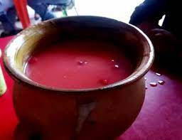
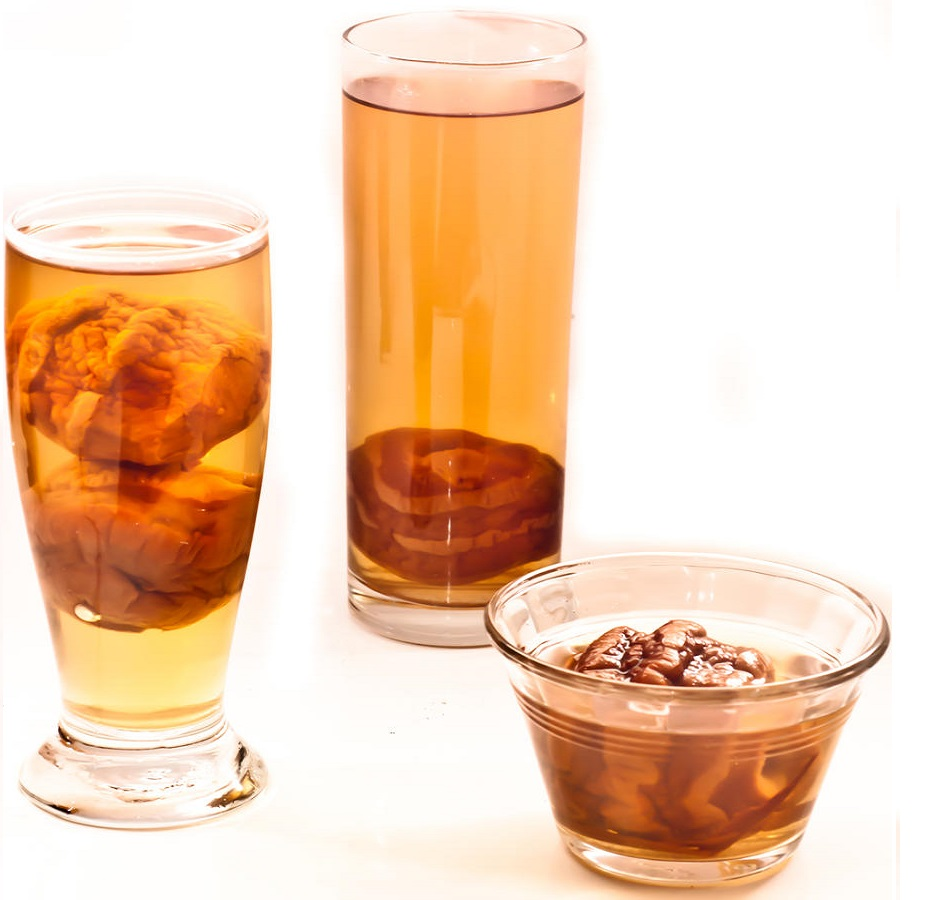
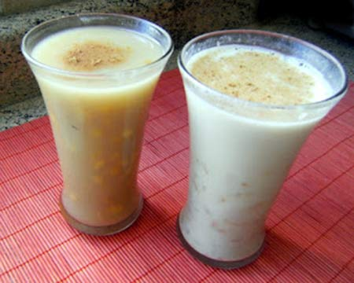

-
- Garapiña -
Descripcion
Garapiña es una bebida tradicional boliviana,la garapiña es una bebida tradicional refrescante e infaltable en las mesas cochabambinas.Se dice que la garapiña fue inventada en Quillacollo. Una dama quillacolleña que, durante las festividades de Todos Santos de antaño, convidaba a sus parientes y amistades chicha con helado de canela, de cuya genial mezcla surgió la garapiña.
Ingredientes
1 cuchara colorante vegetal (airampu)
1 cuchara de azúcar
-
1 cuchara de canela molida con 1 cuchara de azúcar
-
2 tazas de frutillas (fresas) bien rojas y maduras
2 botellas de chicha normal
Preparacion
-
En cuarto de una taza o vaso de chicha remojamos el airampu, hacer esto una hora antes de alistar la garapiña.
-
Colocamos y agregamos al recipiente de cristal con la chicha restante.
-
Añadimos el azúcar y la canela; mezclamos hasta disolver el azúcar y servimos en copas grandes decorando con las frutillas (fresas) bien lavadas.
-
La garapiña es color rojo. Otra forma de servir esta bebida es añadiendo a la chicha, helado de canela.
-
- Mocochinchi -
Descripcion
Es un té helado, el mocochinchi es un refresco de origen boliviano, muy delicioso y refrescante, ya sea en invierno, o verano, tiene un inigualable sabor dulce. El mocochinchi (del quechua muquchinchi, pasa de durazno) es un durazno pelado y deshidratado con el cual se hace una bebida refrescante y azucarada.
Ingredientes
1 kilo de mocochinchi
3 tazas de azúcar
3 litros de agua.
1 palito de canela
Preparacion
-
Poner a remojar el mocochinchi una noche antes que el agua cubra bien los duraznos.
-
Al momento de preparar, hervirlos con agua (si desea agregue un palito de canela), durante 2 horas, hasta que se ablanden.
-
Mientras, preparar un almíbar con el azúcar hasta el punto caramelo semioscuro.
-
Al finalizar la cocción de los duraznos, se echa el caramelo y se bate hasta disolver totalmente.
Retirar del fuego y dejar enfriar.
Servir bien frío, si quiere con hielo.
-
- Tojorí -
Descripcion
Tojorí es una bebida caliente tradicional boliviana, a base de maíz amarillo perfecta para acompañar algún pastel, tortillas o cualquier otro aperitivo. Es una bebida tradicional del altiplano, hecha a base de mazamorra de maíz willkaparu, una variedad de maíz boliviano, molido en trozos grandes.
Ingredientes
1 Taza de maíz quebrado y seco
2 ½ Cucharas de harina de maíz
½ Cucharilla de bicarbonato
1 Ramita de canela
1 Cucharilla de anís
Azúcar al gusto
1 litro de agua
Preparacion
-
Remojar el maíz noche antes en agua caliente.
-
Al día siguiente en una olla hacer hervir la canela y el anís, durante 15 minutos.
-
Seguidamente esperar que enfríe un poco y colar, poner de nuevo el líquido en la olla y agregar el maíz, cuando comience a hervir de nuevo, agregar el bicarbonato y el azúcar, dejar cocer hasta que el maíz reviente y esté suave.
-
Por último disolver el harina en media taza de agua fría y echar a la anterior preparación, revolver hasta que espese y estará listo para tomar.
-
Sugerencia: Si lo que quieres es algo más consistente, puedes agregarle 1 taza de leche evaporada, revolver y bajar inmediatamente del fuego.